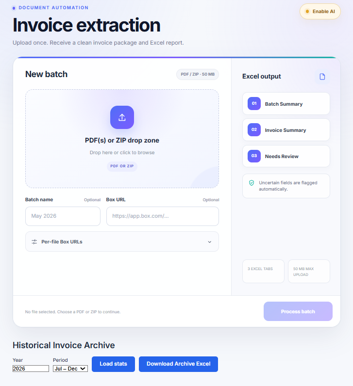

01 / The context
The workflow matters as much as the code.
Healthcare administration involves information spread across PDFs, spreadsheets, payment documents, and folder archives. Staff need to know which records agree, which are missing, and which require a closer look.
At MyoHealth, I build tools that bring those checks into a consistent workflow. The goal is to make the next action clear while keeping the original records and source references available for review.
02 / My contribution
From the first upload to a usable report.
My work spans requirements, the React interface, FastAPI services, data handling, deployment, and support for the staff using the tools.
- Invoice extraction: process PDF and ZIP uploads, group invoice information, retain source documents, and surface duplicates or uncertain fields.
- Payment reconciliation: compare spreadsheet payments with cheque records and produce a focused list of differences to investigate.
- Archive cross-checking: compare Walnut records with Box folder information and distinguish matches, expected exceptions, and items needing attention.

03 / Engineering choices
Make uncertainty visible.
Document inputs are not always consistent. Names can vary, fields can be unclear, and a valid exception can look like a missing record. A useful report needs to explain those differences instead of hiding them behind a single success message.
I work with explicit validation and review categories, source preservation, and clear report layouts. The platform also brings together authentication, role-based access, PostgreSQL data models, Alembic migrations, and Docker deployment.
04 / What this work has taught me
The last step is part of the product.
An extraction routine is only useful when someone can understand and act on its output. Working directly with administrative and accounting teams has shaped how I think about naming, exception handling, report structure, and the small details that make software practical in a busy workday.